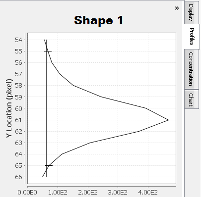
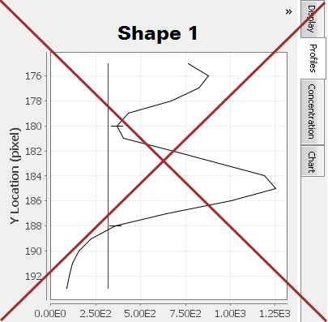
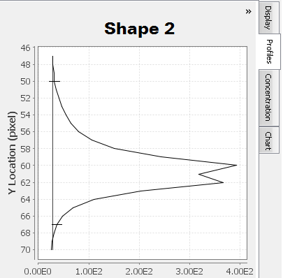

Only one peak should appear in the shape profile if only one band is enclosed by the shape (and the shape's background border).
In
|
Acceptable: One Profile Peak |
NOT Acceptable: Two Profile Peaks |
Acceptable: One Profile Peak |
|
 |
 |
 |
|
The Profiles tab for Shape 1 contains only one peak. |
An extra peak is visible above the main peak for Shape 1, because the background border width has been set to 5 instead of 2. |
Although two "humps" are visible at the top of the peak, only one band is being represented. The additional peak probably comes from an area of lower optical density near the center of Shape 2. |
|
Shape 1 |
Shape 1 |
Shape 2 |
|
Figure 1. The background border for Shape 1 is set to 2 pixels and does not overlap other shapes. |
Figure 2. The background border for Shape 1 is set to 5 instead of 2 and now overlaps another shape. |
Figure 3. The border width for Shape 2 has been set to 5, but no other bands are being overlapped. |
Multiple "humps" may exist at the top of a peak (see Figure 3). Carefully examine the Profiles tab in conjunction with the background border surrounding the shape to ensure multiple "humps" are from the same band and not different bands. For Shape 2, a less dense area inside the band is causing two peaks to appear in the Profiles tab.